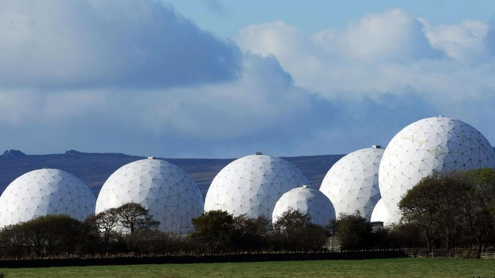

Criada durante a Guerra Fria, essa base serve de interceptadora de Inteligencia
para a 'Five Eye' uma rede global de espionagen iniciada pela Austrália, Canada, Nova
Zealândia, o Reino Unido e Estados Unidos. So se pode entrar na base trabalhando para
a 'NSA' ou para a própria 'Five Eye'.

Força Aérea Real de Menwith Hill, Inglaterra
Arquivos Secretos do Vaticano, Vaticano
A biblioteca mais privada do mumdo. Entre os tesouros históricos do arquivo se encontram :
uma carta de 1521 do Papa Leão X excomungando Martin Luther e lançar a Reforma ;
transcrições do século 14 a partir do julgamento dos Templários ;
correspondência de Michelangelo ( século 16 ) Abraham Lincoln ( século 19 );
e uma carta papal de 1198 chamando para uma Quarta Cruzada à Terra Santa .